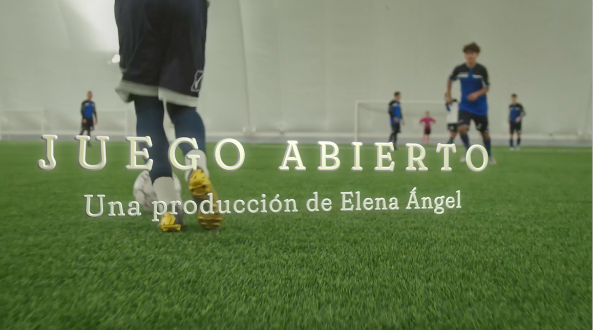

Objetivo general
- Relatar a través de un producto multimedial y nuevos formatos, los obstáculos, estigmas, desigualdades y brechas de género en el trabajo de las periodistas deportivas en Colombia desde los años 70 hasta el 2023
Objetivos específicos
- Investigar cuales han sido los obstáculos laborales y profesionales para las periodistas en medios deportivos.
- Analizar la tipología de la brecha de género en las redacciones deportivas en Colombia.
- Identificar la relación entre géneros en las secciones deportivas.
- Determinar las formas de estigmatización a las periodistas deportivas en las redacciones.
Históricamente la mujer ha sido un sexo encasillado por los trabajos del hogar y por una idea socialmente construida. El deporte y el periodismo deportivo ha sido un tema socialmente encasillado para el género masculino, limitando la sana competencia. García (1994) afirma que la figura de la mujer se convierte en una variable discriminatoria en relación a su participación en las actividades deportivas. En Colombia existe una brecha salarial entre géneros, de acuerdo con un estudio hecho por la Federación Colombiana de Gestión Humana, las mujeres ganan hasta un 26% menos que los hombres.
Sin embargo, este tema va mucho más allá del impacto económico. Poco a poco la mujer ha ido incursionando en campos denominados socialmente masculinos, como lo es el deporte. Las periodistas deportivas surgieron décadas atrás y han crecido en los últimos años presentando, comentando y cubriendo fuentes deportivas; sin embargo, falta camino, Yizeth, (2018). Es innegable que hoy en día hay más presencia femenina en el periodismo deportivo, hoy en día se ven mujeres en programas de debates, comentando partidos y próximamente comentandolos. Sin embargo, no ha sido un camino fácil para ellas.
Esta tesis es el resultado de una preocupación sobre la presencia y el manejo del rol femenino en el periodismo deportivo. Nace a través de ver un vacío sobre las dificultades, el proceso y los retos de la mujer en el campo deportivo, pero visto desde el relato y las experiencias de los actores involucrados. No existe un análisis hecho desde las mismas voces de los personajes principales, como lo son los periodistas y los jefes. Por esa razón, nace Juego Abierto.
La mujer tuvo un inicio difícil, en donde se tenía una idea muy machista del medio y en donde la mujer solo se veía encasillada en labores no remuneradas y no respetadas como el ama de casa. Sin embargo, con su experiencia y trayectoria fueron abriendo camino para las nuevas generaciones que hoy marcan un hito, hombres y mujeres en un mismo espacio hablando de deportes. Personas como Blanca Luz Uribe, Claudia Helena Hernandez, Liliana Salazar y otras, han logrado enmarcar este camino de las mujeres.
Daniel Menayo, a través de su libro, Fútbol Femenino, 20 toques (2015), afirma que las mujeres han tenido que ocultar su género, entrando en conflicto de intereses y afectando su vida personal para intentar entrar al campo masculino como se cree es el deporte. Así que se podría decir que existe todavía una estigmatización laboral y social hacia la mujer, pero se ha evolucionado más en esa idea. Poco a poco la mujer ha tenido que demostrar forzosamente sus capacidades para poder involucrarse en temas y campos que antes no era bien visto.
La mujer se ha visto desafiada para entrar en el mundo del deporte, tanto para hablar de él, como para hacer parte. Sin embargo, poco a poco, la presencia de ella se ha visto incrementada. Por ende, este producto busca evidenciar, narrar y explicar a través de las experiencias de diferentes periodistas y editores de medios, como ha sido la evolución y presencia de la mujer en el periodismo deportivo. El relato vivencial de 15 periodistas será la respuesta a cómo se ha transformado la mujer en el periodismo deportivo a través de los años en Colombia.
Los inicios del deporte se remontan al año 4000 a.C en Egipto, en el periodo colonial se reconocen los primeros periodistas deportivos y luego es hasta los años 40 que la primera mujer periodista deportiva aparece. Así que se puede concluir que el hombre ha tenido más presencia y recorrido en el periodismo deportivo, comparada a la mujer, por motivos, machistas, sociales, legales y demás. Luego la primera mujer narradora aparece en 2014, la alemana Claudia Neumann y en Colombia todavía no hay una mujer que narre partidos oficiales.
Luego de identificar la preocupación sobre el rol de la mujer en el periodismo deportivo y la falta de información sobre ello, se quiso investigar a través de las voces de periodistas. Identificar las voces de los compañeros de sets, de sus jefes, de sus amigos y de su competencia directa, hombres y mujeres periodistas deportivos. Se quiere identificar experiencias, emociones, retos, problemas, confrontaciones y demás aspectos desde aquellos que viven del periodismo deportivo.
Juego abierto es el resultado de 15 entrevistas a periodistas deportivos, tanto hombres como mujeres y 3 directores de medios. Es una página dedicada a la historia y la evolución de los dos sexos en el periodismo. A través de él, se podrá jugar con los 7 diferentes nuevos formatos, en donde en cada uno se encontrarán experiencias, situaciones, emociones y mucho más de periodistas. Cesar Augusto Londoño, Carlos Orduz, Claudia Helena Hernandez, Blanca Luz Uribe, Ricardo Orrego, Antonio Casale, Juliana Salazar, Liliana Salazar, Juan Felipe Cadavid, Steven Arce, Marina Grazniera, Liche Duran y Pilar Velasquez fueron los periodistas entrevistados que podrán ver en la página web. Por otro lado, también estarán Olga Lucia Barona, Juan Pablo Sepulveda y Eder Torres como directores de Win Sport, El Espectador y ESPN para entregar una visión del periodismo un poco más técnica y legal.
No era posible unir toda la variedad de voces y experiencias para llegar a una conclusión, justo porque eso es lo que se busca, pluralidad de voces. A través de todos los relatos se va construyendo ese ideal del que se viene hablando y preguntando, el rol de la mujer en el periodismo deportivo. Serán ellos mismos los que desde lo más adentro tanto de sus vidas como del periodismo, contaran la verdad de el género femenino. La única forma de conocer la historia es viéndola desde adentro, desde los que la viven.
El proceso de las entrevistas dio campo para reconocer la diversidad de perspectivas, emociones y experiencias, todas tan diversas entre sí. Aunque todos llegaron a una misma conclusión; el periodismo deportivo está en constante evolución y cambio, no estuvieron tan de acuerdo frente a la cuota de género, la presencia femenina, la relación entre ambos sexos y otros temas que fueron más debatidos. No era posible tener una sola idea de todos los 15 relatos, por eso es que nace Juego Abierto, una página con 7 nuevos formatos que demuestran 15 perspectivas diferentes.